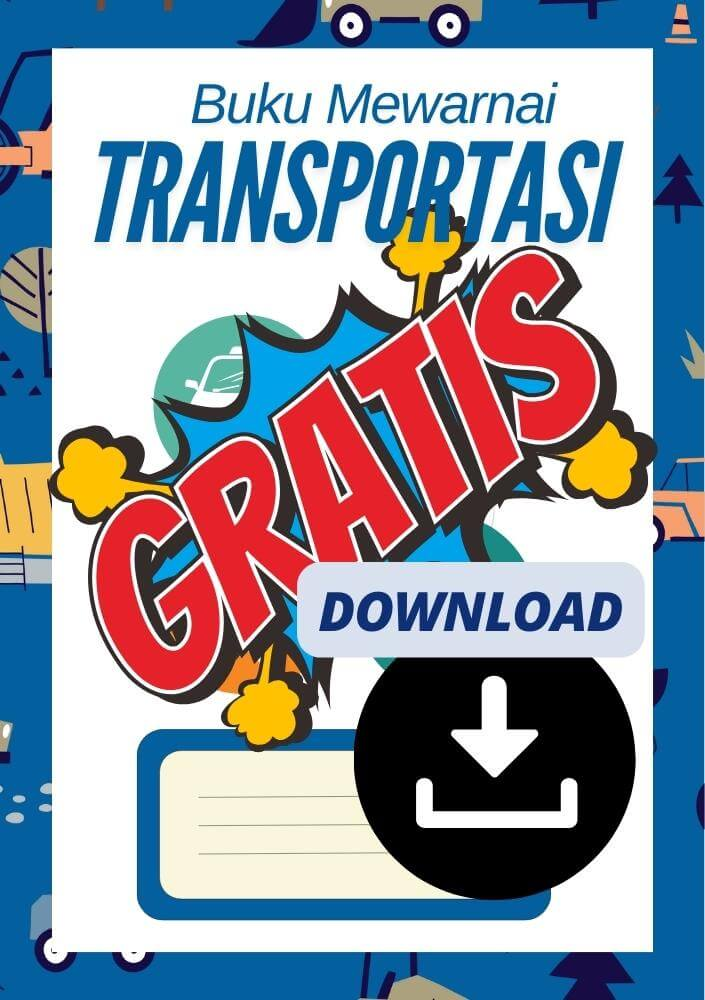
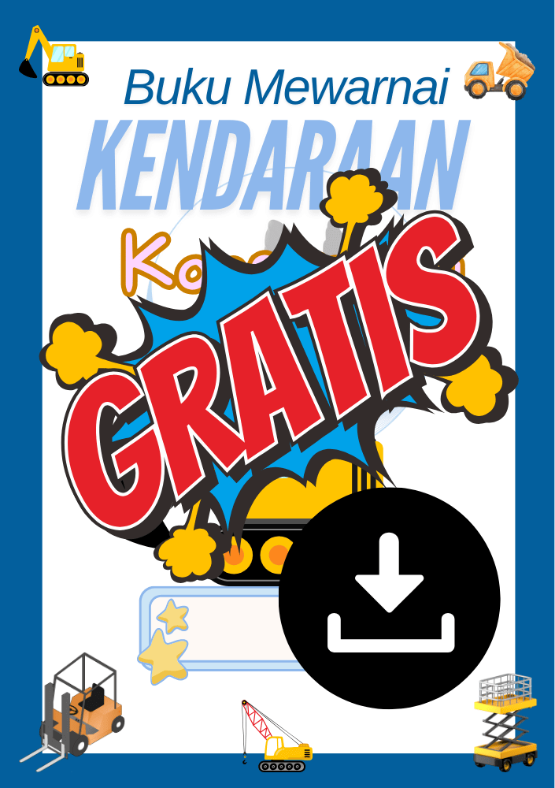
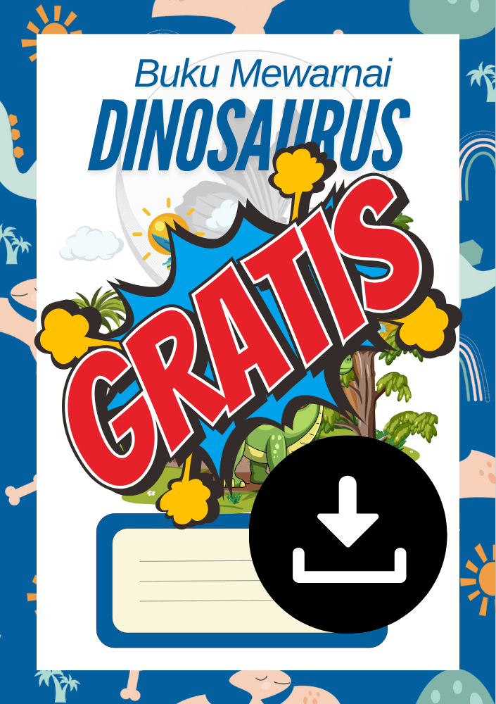

Matematika Quiz
Pilih Level

Menentang Diri
Printables

▼
"Jelajahi & Warnai Kendaraan Transportasi!"
Siap menjelajahi dunia transportasi dengan halaman mewarnai gratis dari Pincil! Set ini menampilkan berbagai jenis kendaraan, mulai dari mobil dan bus hingga pesawat dan kereta, mengajak anak-anak untuk belajar tentang berbagai cara kita bergerak sambil menikmati aktivitas mewarnai. Cocok untuk anak-anak yang penasaran dan penuh kreativitas!
Detail:
- Unduhan Cetakan Gratis:Unduh dan cetak halaman mewarnai ini secara gratis langsung dari website kami.
- Tanpa Batas untuk Penggunaan Pribadi: Cetak salinan sebanyak yang Anda mau untuk kegiatan menyenangkan atau edukasi di rumah.
- Untuk Semua Usia: Anak-anak dapat menggunakan krayon, pensil warna, atau spidol untuk menghidupkan setiap kendaraan dengan gaya mereka sendiri!

▼
"Warnai, dan Belajar dengan Kendaraan Konstruksi!"
Siap untuk mewarnai dan belajar bersama halaman mewarnai kendaraan konstruksi gratis dari Pincil! Mulai dari buldoser hingga derek, setiap halaman menampilkan kendaraan kuat yang membantu membangun gedung-gedung, menginspirasi anak-anak untuk mengenal dunia konstruksi sambil bersenang-senang dengan warna. Cocok untuk para pembangun dan seniman cilik!
Detail:
- Unduhan Cetakan Gratis:Unduh dan cetak halaman mewarnai ini secara gratis langsung dari website kami.
- Tanpa Batas untuk Penggunaan Pribadi: Cetak salinan sebanyak yang Anda mau untuk kegiatan menyenangkan atau edukasi di rumah.
- Untuk Semua Usia: Anak-anak dapat menggunakan krayon, pensil warna, atau spidol untuk menghidupkan setiap kendaraan dengan gaya mereka sendiri!

▼
"Seru Mewarnai dengan 16 Halaman Cetak Dinosaurus!"
Lepaskan kreativitas anak Anda dengan 16 halaman mewarnai dinosaurus gratis dari Pincil! Dari T-Rex yang gagah hingga Triceratops yang ramah, koleksi ini menghadirkan dunia dinosaurus ke kehidupan, sempurna untuk para penggemar dino dari segala usia. membantu anak-anak menjelajahi zaman prasejarah sambil menikmati aktivitas mewarnai.
Detail:
- Unduhan Cetakan Gratis:Unduh semua 16 halaman secara gratis langsung dari website kami.
- Tanpa Batas untuk Penggunaan Pribadi:Cetak salinan sebanyak yang Anda mau untuk kegiatan menyenangkan atau edukasi di rumah.
- Untuk Semua Usia: Anak-anak dapat menggunakan krayon, pensil warna, atau spidol untuk menghidupkan setiap kendaraan dengan gaya mereka sendiri!